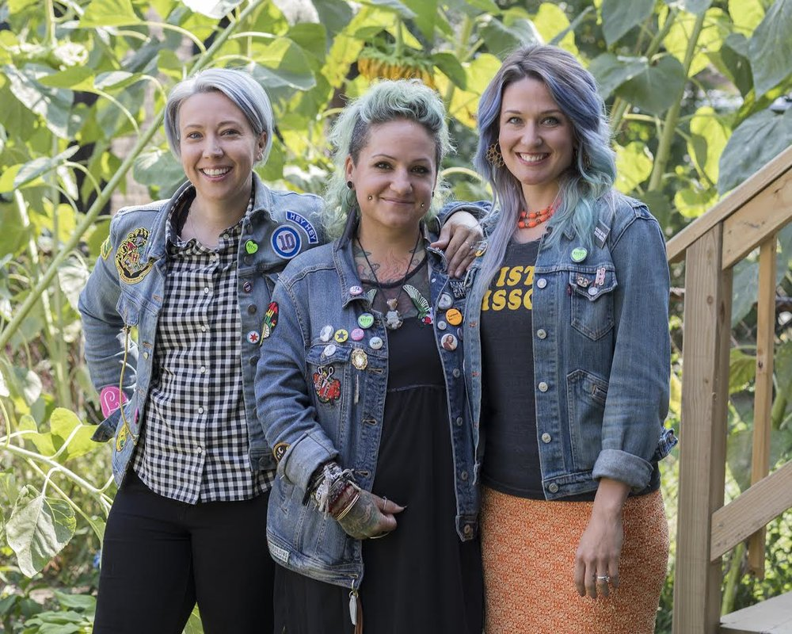

Twisted Scissors Chicago was opened in 2007 by owners Anna Armes, Angela Bolos-Hartman and Amber Murphy-Huels. What started as a small store front in Logan Square with 6 stylist stations, a waiting room made up of lawn chairs, and a cooler full of PBR has now expanded to a second location--Little Sister Avondale, and a full spa at our Logan Square location.

Both locations offer a unique and eccentric environment with friendly and talented staff! We offer coloring services of any color of the rainbow and cuts that range from long and layered to short and edgy! Our spa offers a wide range of services including lash extensions and customized facials.
We want our clients to feel comfortable, so we invite you to sit down on our comfy couches, relax with a beer or glass or wine and enjoy any uniquely tailored services with one of our talented stylists. As a female and LGBTQ owned and operated business we offer a safe space to all walks of life. We’re proud to partner with Strands for Trans, a movement that lists businesses who offer discrimination-free salon services to all.
In addition to it’s punk-chic environment, Twisted Scissors also operates as a green salon by proudly partnering with Green Circle Salon to divert 90% of salon waste from landfills. We also work with Healthy Soil Compost and The Illinois Food Scrap Coalition to turn compost into fresh soil! In return, Healthy Soil compost provides us with castings to grow our beautiful backyard vegetable garden at Little Sister Avondale.
We want every person that walks in our doors to love their experience and love their hair even more. We know it hurts to be beautiful, but Twisted Scissors makes it hurt a little less.